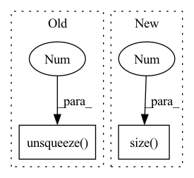

Pattern ID :1814
Before Change
batch, city_t, xy = x.size()
embed_enc_inputs = self.Embedding(x)
enc_h, (h, c) = self.Encoder(embed_enc_inputs, None)
dec_input = self.dec_input.unsqueeze(0).repeat(batch,1).unsqueeze(1 ) .to(device)
for i in range(city_t):
_, (h, c) = self.Decoder(dec_input, (h, c))
query, ref = h.squeeze(0), enc_hAfter Change
x = x.to(device)
batch, city_t, xy = x.size()
embed_enc_inputs = self.Embedding(x)
embed = embed_enc_inputs.size(2 )
enc_h, (h, c) = self.Encoder(embed_enc_inputs, None)
ref = enc_h
query = h.permute(1,0,2).to(device)// query = self.dec_input.unsqueeze(0).repeat(batch,1).unsqueeze(1).to(device)
process_h, process_c = [torch.zeros((1, batch, embed), device = device) for _ in range(2)]In pattern: SUPERPATTERN
Frequency: 5
Non-data size: 2
Instances Fragment ID: 13084275
Project Name: rintarooo/tsp_drl_ptrnet
Commit Name: ab78416ee96de7b4b780b38a77f4956518afa19c
Time: 2020-11-12
Author: 310rnomeado@gmail.com
File Name: critic.py
M Class Name: PtrNet2
N Class Name: PtrNet2
M Method Name: forward(3)
N Method Name: forward(3)
M Parent Class: nn.Module
N Parent Class: nn.Module
M File Name: critic.py
N File Name: critic.py
M Start Line: 35
M End Line: 38
N Start Line: 40
N End Line: 51
Before Change
outputs = outputs.sum(axis=-1)
else: // for one input, do not perform variable selection but just encoding
outputs = self.single_variable_grns[0](embedding) // fast forward if only one variable
sparse_weights = torch.ones_like(outputs).unsqueeze(-1 )
return outputs, sparse_weights
class PositionalEncoder(torch.nn.Module):After Change
outputs = outputs.sum(axis=-1)
else: // for one input, do not perform variable selection but just encoding
outputs = self.single_variable_grns[0](embedding) // fast forward if only one variable
sparse_weights = torch.ones(outputs.size(0), outputs.size(1 ) , 1, 1, device=outputs.device)
return outputs, sparse_weights
Fragment ID: 13084274
Project Name: jdb78/pytorch-forecasting
Commit Name: ea7256c4d7f37c2f41714db7ce9693e365ff93b8
Time: 2020-06-29
Author: beitner.jan@bcg.com
File Name: temporal_fusion_transformer_pytorch/model/sub_modules.py
M Class Name: VariableSelectionNetwork
N Class Name: VariableSelectionNetwork
M Method Name: forward(3)
N Method Name: forward(3)
M Parent Class: nn.Module
N Parent Class: nn.Module
M File Name: temporal_fusion_transformer_pytorch/model/sub_modules.py
N File Name: temporal_fusion_transformer_pytorch/model/sub_modules.py
M Start Line: 190
M End Line: 191
N Start Line: 190
N End Line: 191
Before Change
dist_ap, dist_an = [], []
for i in range(n):
dist_ap.append(dist[i][pos_mask[i]].max().unsqueeze(0 ) )
dist_an.append(dist[i][neg_mask[i]].min().unsqueeze(0))
dist_ap = torch.cat(dist_ap)After Change
dist_mat = pairwise_euclidean_distance(f, xbm_f)
// hard examples mining
n, m = f.size(0), xbm_f.size(0 )
identity_mat = labels.expand(m, n).t().eq(xbm_labels.expand(n, m)).float()
dist_ap, dist_an = hard_examples_mining(dist_mat, identity_mat)
// Compute ranking hinge loss Fragment ID: 13084273
Project Name: thuml/transfer-learning-library
Commit Name: 0f8f51c4b2fac78edf87e29764e4da3deec6f65f
Time: 2021-10-14
Author: 57670068+tsingcbx99@users.noreply.github.com
File Name: common/vision/models/reid/loss.py
M Class Name: TripletLossXBM
N Class Name: TripletLossXBM
M Method Name: forward(5)
N Method Name: forward(5)
M Parent Class: nn.Module
N Parent Class: nn.Module
M File Name: common/vision/models/reid/loss.py
N File Name: common/vision/models/reid/loss.py
M Start Line: 132
M End Line: 152
N Start Line: 154
N End Line: 162
Before Change
x = x.view(x.size(0), -1)
// Unsqueeze for sequence length
if t == 0:
gru_output, h_n = self.rnn(x.unsqueeze(1 ) )
else:
gru_output, h_n = self.rnn(x.unsqueeze(1), h_n)
// output dim: BSx1 and Squeeze sequence length after completing GRU stepAfter Change
output_seq = torch.stack(batched_output_per_clip, dim=0)
gru_output, h_n = self.rnn(output_seq.unsqueeze(1))
// gru_output = gru_output.squeeze(1)
for i in range(gru_output.size(0 ) ):
hr = self.gru_fc_out(gru_output[i, :, :])
// // hr = hr * 25.0
hr_per_clip.append(hr.flatten()) Fragment ID: 13084271
Project Name: anweshcr7/rhythmnet
Commit Name: 0f9fc9b96933c04f723fbfa5b80cdf1a398828c3
Time: 2021-03-14
Author: anwesh.marwade@beyondsports.nl
File Name: src/models/rhythmNet.py
M Class Name: RhythmNet
N Class Name: RhythmNet
M Method Name: forward(3)
N Method Name: forward(3)
M Parent Class: nn.Module
N Parent Class: nn.Module
M File Name: src/models/rhythmNet.py
N File Name: src/models/rhythmNet.py
M Start Line: 33
M End Line: 56
N Start Line: 33
N End Line: 64
Before Change
visual_emo_vecs = self.affineVisual(text_emo_vecs)
audio_emo_vecs = self.affineAudio(text_emo_vecs)
text_emo_vecs = text_emo_vecs.unsqueeze(0 ) .repeat(batch_size, 1, 1)
visual_emo_vecs = visual_emo_vecs.unsqueeze(0).repeat(batch_size, 1, 1)
audio_emo_vecs = audio_emo_vecs.unsqueeze(0).repeat(batch_size, 1, 1)
After Change
def forward(self, X_text, X_audio, X_visual):
// TODO: try residual connection
batch_size = X_text.size(0 )
logits = None
if "t" in self.modalities:
output_text, _ = self.RNNs[0](X_text)
output_text = output_text[:, -1, :] Fragment ID: 13084266
Project Name: wenliangdai/modality-transferable-mer
Commit Name: b0e565d11d6b3bf9f65fb1dcbdc8c641a2bc8054
Time: 2020-06-10
Author: wenliang.dai.1995@gmail.com
File Name: src/models/temp.py
M Class Name: EmotionEmbAttnModel
N Class Name: EmotionEmbAttnModel
M Method Name: forward(4)
N Method Name: forward(4)
M Parent Class: nn.Module
N Parent Class: nn.Module
M File Name: src/models/temp.py
N File Name: src/models/temp.py
M Start Line: 53
M End Line: 79
N Start Line: 70
N End Line: 96